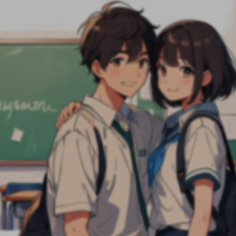

예술
널 위한 문화예술
세계 최대 갤러리 통째로
들여온 역대급 전시
루브르 박물관이 걸리는 작품들이 한국에 온다..
트렌드
조승연의 탐구생활
비트코인 더 오를까?
[2024 트렌드] 저출산, 메타버스, 올드머니룩

우리의 사랑은 왜
사랑/연애
교양만두
우리의 사랑은 왜
이렇게 어려울까?
모쏠을 위한 실전 연애 비법
심리
사피엔스 스튜디오
틈만 나면 남 욕하는
사람, 대체 왜 그럴까?
뒷담화 대처, '이렇게'만 하세요!
음식
일당백
왜 사람은 빵만으로
살 수 없는가
음식문화의 수수께끼

과학
보다BODA
인간과 동물의
신체 능력이
비교 불가능한 이유
과학을 보다
건강
책식주의
빨리 늙고 싶지 않다면
집에서 가장 먼저 버려야 할 것
나이보다 젊고 건강해보이는 사람들의 공통적인 습관
예술
백수골방
'인사이드 아웃2'에 드러난 픽사의 고민들
불안이 지배하는 픽사
트렌드
노준영
현대자동차는
왜 단편영화 '밤낚시'를
만들었나?
요즘 세상 트렌드 Season 2
사랑/연애
이종원
연애는 소송처럼
해야 한다.
나는 패소했다. 항소했지만, 결론은 기각이었다.
심리
심리학관
타인을 도구화하는
나르시시즘형
관계의 바운더리가 무너진 경우

음식
하뮤하뮤
타인의 음식취향
오늘 뭐 먹었어요? 저는 비빔밥 먹었습니다.
과학
석류
인류가 초래한
여섯 번째 대멸종 위기
[유레카] 쉽게 읽는 과학
건강
우이
몸이 보내는 신호를 알아차리는 것
두 번의 난청 진단을 받고서
-
이
주의
추천글